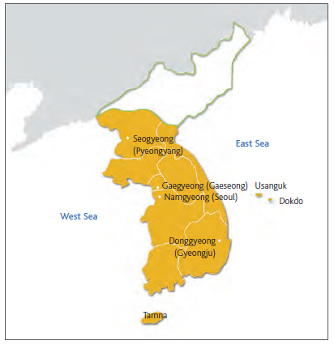

Goryeo
Goryeo (고려) was a korean kingdom established in 918 by king Taejo (태조), which took up the majority of the Korean peninsula, up to the borders of modern-day Wonsan.
Founding
Goryeo was founded in 918 by Taejo, formerly Wang Geon, after overthrowing Gung Ye. It's foundation brought about the end of the 3 kingdoms period, after Goryeo annexed Silla in 935 and defeating Baekje in 936. Taejo then moved the capital of his kingdom to Kaesong(개성), his hometown.
Society
A factor which set Goryeo apart from other contemporary societies was that women were treated to the same level as men, even going so far as to let women divorce their husbands and keep custody
of their children and could inherit the same as what their male siblings could. There was also a heirarchy similar to that of european medieval kingdoms in that the serfs or slaves, were at the lowest
rung of the heirachical ladder, followed by the peasants, who made up the majority of the populace, then were the skilled artisans, then of course came the royalty. in 1037 AD a law was introduced which stated that slavery was hereditary, meaning any child born to a slave
mother or father, would also be considered a slave, causing the number of slaves to increase drastically, with slaves making up nearly 30% of the population.
of course came the royalty. in 1037 AD a law was introduced which stated that slavery was hereditary, meaning any child born to a slave
mother or father, would also be considered a slave, causing the number of slaves to increase drastically, with slaves making up nearly 30% of the population.
Politics
Goryeo's government was similar to previous Korean kindoms, in that they had a centralised government who were ruled over by a monarch. there were also local magistrates, who had complete authority in districts where there was no localised government present. which made up nearly 60% of the kingdom.
Goryeo had established close ties to China's Song dynasty, who requested that Goryeo help them deal with Khitan and Jin but the Koreans didn't want to be involved in a regional conflict. Korea was also being plagued by attacks from the mongols after having a peaceful period from the 12th to 13th century, when they had been united by Genghis Khan who swept through China, conquering Beijing in 1215. Then in 1231 the Mongols invaded Korea forcing the capital to move to Kanghwa Island.
Collapse
In 1388, king Woo(킹 우) of Goryeo, and General Choe Yeong(최용), planned a campaign to invade Liaoning, China. Choe Yeong was put in charge, but rather than follow orders, he stopped at the border of China and rebelled, and in 1392 Yi Ja-chun(이자천), usurped the throne, establishing the Joseon Dynsaty.